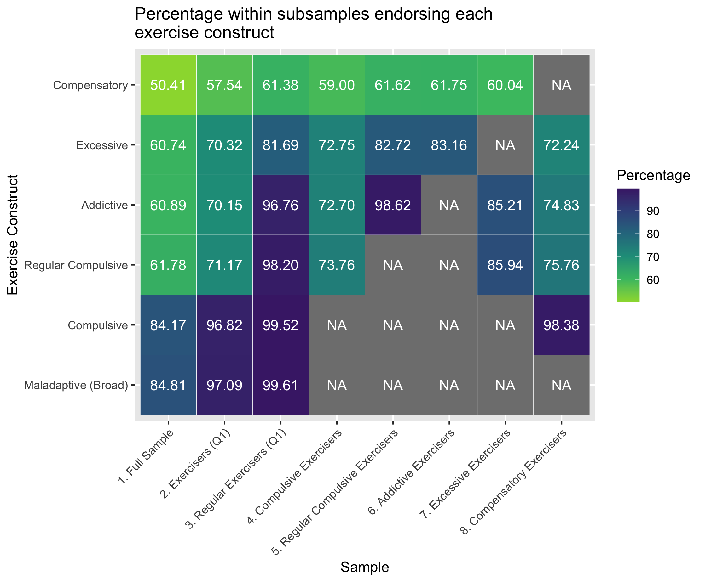
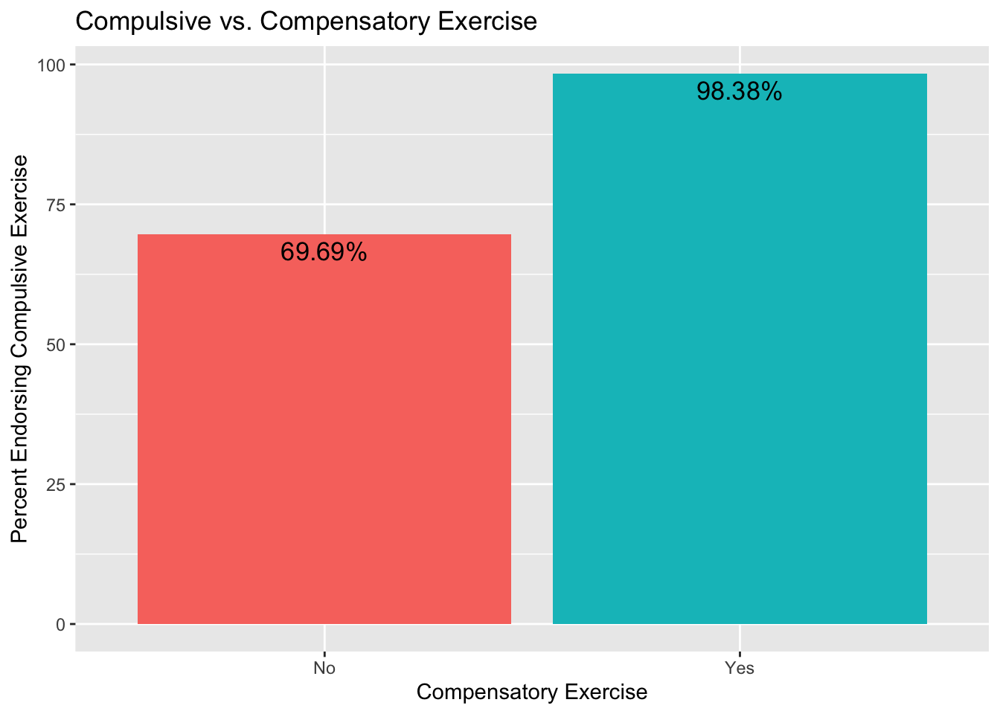
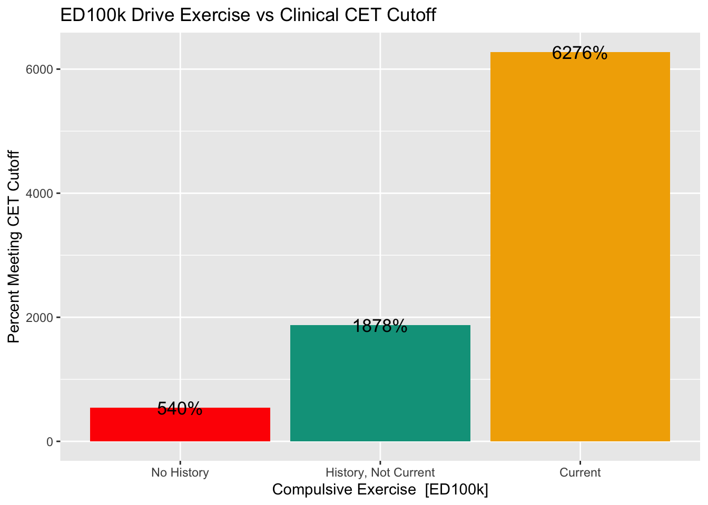
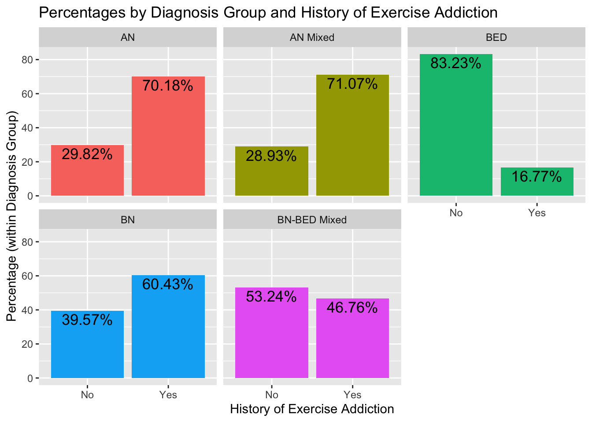
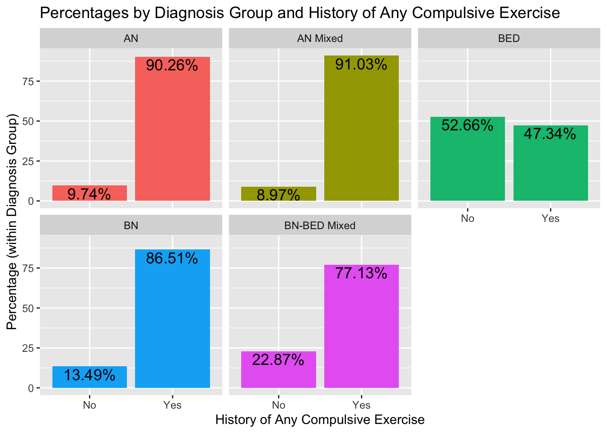

EDGI Exercise Validation Paper Results
Preliminary Aim - Develop a scoring algorithm
The first aim of this paper is to develop a scoring algorithm for a ED100k exercise items in an ED sample based on theoretical literature and available ED100k items which captures and defines rates of:
1. Compulsive Exercise
Ever and Regular Compulsive Exercise
Current Compulsive Exercise
2. Exercise Addiction
3. Excessive Exercise
4. Compensatory Exercise
5. Maladaptive Exercise (Broad)
Scoring
The ED100k included 12 questions assessing maladaptive exercise. The first question, which all participants were asked, inquires as to whether individuals ever exercised to intentionally control weight and shape (Q1). Only those who endorsed EVER Exercising to intentionally control weight or shape were asked to respond to two additional questions which asked about exercise in more detail, including two questions (Q2, Q3) about whether individuals ever felt compelled to exercise and whether they felt uneasy or distressed if unable to exercise. In a third step, those who reported ever exercising to intentionally control weight and shape and answered ‘Yes’ to either Q2 or Q3 were additionally asked three questions (Q4-Q6) about whether exercise interfered with life activities or diet, along with questions regarding the onset (Q7), duration (Q8), and frequency (Q9) of their compulsive exercise, along with whether they engaged in the behavior currently (Q10) and the last age at which they engaged in the behavior (Q11). In a separate section, all participants were asked whether they had ‘exercised excessively’ specifically to compensate for episodes of binge eating or overeating (Q12). During recoding, those (n = 945) who reported no to Q1 - exercise to control shape and weight, were marked as ‘0’ for follow-up questions. Those who reported that they had engaged in exercise to for weight and shape control but ‘No’ to both Q2 & Q3 (n = 200) were marked as ‘0’ for Q4-Q11.
Scoring algorithms for each subconstruct are presented in Table 1.
| Construct | Criteria | Nested Within |
|---|---|---|
| Exercise for Weight Control | To control weight and shape – participant endorses that they have exercised excessively (e.g. felt compelled to exercise, felt uneasy or distressed if unable to exercise) = ‘a few times, but it never became a habit’ or more | NA |
| Regular Exercise for Weight Control | To control weight and shape – participant endorses that they have exercised excessively (e.g. felt compelled to exercise, felt uneasy or distressed if unable to exercise) = ‘more often’ | NA |
| Compulsive Exercise | Exercise for Weight Control + Ever felt compelled to exercise == ‘YES’ OR Ever uneasy or distressed when unable to exercise == ‘YES’ |
Exercise for Weight Control |
| Regular Compulsive Exercise | Regular Exercise for Weight Control Ever felt compelled to exercise == ‘YES’ OR Ever uneasy or distressed when unable to exercise == ‘YES’ |
Exercise for Weight Control Regular Exercise for Weight Control Compulsive Exercise |
| Current Compulsive Exercise | Compulsive Exercise Do you currently exercise to control weight and shape AND feel compelled to exercise or distress if unable to exercise? == ‘YES’ |
Compulsive Exercise |
| Addictive Exercise | Regular Compulsive Exercise lasting at Least 3 month 1 or more of the following: caused them to change eating habits -decline opportunities to be with friends -exercised despite illness or injury |
Exercise for Weight Control Regular Exercise for Weight Control Compulsive Exercise Regular Compulsive Exercise |
| Excessive Exercise | Compulsive Exercise Duration >= 1 month Frequency = ‘Every Day’ or ‘Nearly Every Day’ |
Exercise for Weight Control Compulsive Exercise |
| Compensatory Exercise | Have you ever used any of the following to compensate for episodes of binge eating or overeating? (Mark all that apply) (choice=Exercised excessively (e.g., felt compelled to exercise, felt uneasy or distressed if unable to exercise)) | NA |
| Maladaptive Exercise | Compulsive Exercise == ‘Yes’ OR Compensatory Exercise == ‘Yes’ | NA |
Aim 1. Evaluate patterns of response across multiple exercise constructs, to identify the degree to which these constructs overlap in membership or capture distinct groups
We hypothesize that those indicating that they have ‘exercise excessively’ more often in the initial screening item will also be likely to meet criteria for compulsive exercise, exercise addiction, and excessive exercise (high sensitivity), and moderately likely to meet criteria for compensatory exercise (moderate sensitivity; high negative predictive value). Specficially, we hypotehsize ensitivity for compulsive exercise, exercise addiction, and excessive exercise based on item 1 will be > 80%. Sensitivity for compensatory exercise from item 1 will be > 60%, with > 80% negative predictive value.
Figure 1 presents the proportion of the full sample along with subsamples meeting criteria for each (sub)construct

Accuracy of Q1 - ‘Excessive Exercise’ for Weight Control to Detect Different Exercise Constructs

Overall, there was high convergent validity for Q1 with Q2-Q6. Specifically, individuals eating disorders who endorse using exercise to intentionally control weight ‘more often’ are indeed highly likely to engage in this behavior for a substantive period of time – 98.2% of those reporting exercise to intentionally control weight ‘more often’ reported a duration of compulsive exercise > 3 months; a time period of equivalent to diagnostic levels of other intentional weight control behaviors), and to report symptoms consistent with a definition of both compulsive and addictive exercise. Figure 2 reports on the utility of Q1 to capture different exercise constructs assessed in Q2-Q12. The sensitivity and negative predictive values of endorsement of any exercise Q1 in detecting compulsive, addictive, and excessive exercise were forced to 1.0 for those answering that they had ever engaged in any exercise on Q1 by skip logic. Sensitivity to compensatory exercise, was also high – almost all of those who endorsed compensatory exercise also reported excessive exercise for weight loss on Q1. Positive predictive value – the degree to which an affirmative answer to Q1 translated to endorsement of these constructs, varied across constructs. For compulsive exercise, those who endorsed any exercise on Q1 were also very likely to endorse compulsive exercise symptoms. Positive predictive value of those endorsing any exercise on Q1 was somewhat lower for excessive, addictive, and regular compulsive exercise (~.70), and even lower for compensatory exercise (0.58) The positive predictive value rose for these maladaptive exercise constructs when individuals reported exercise ‘more often’. Regarding specificity, there was relatively high specificity for ‘Any’ or more to Q1 for compulsive exercise, which rose to near perfect specificity when the criteria was set at ‘More Often’. Specificty was low for ‘Any’ exercise in Q1 capturing addictive, excessive, and regular compulsive exercise, but rose significantly when criteria was set at ‘More Often’. Specificity was also low for ‘Any’ exercise in Q1 capturing compensatory exercise, and rose modestly when the Q1 criteria was set to ‘More Often’. When considering overall accuracy, endorsement of ‘any’ exercise in Q1 best captured those who endorsed any history of compulsive exercise, whereas, for the more stringent criteria of regular compulsive or addictive exercise, endorsement of exercise ‘More Often’ in Q1 demonstrated good accuracy. Overall, the vast majority of individuals with eating disorders who reporting regular exercise for weight loss to control weight and shape in Q1 go on to report that this exercise was compulsive, and that they also experienced life interfering sequellae of this behavior. Further, regarding specific addictive exercise symptoms, the modal number of exercise interference items was all 3. While Q1 accurately defined those experiencing compulsive and addictive exercise with little additional information provided from follow-up questions, the same was not true for excessive exercise and compensatory exercise – additional questions may be necessary to define excessive and compensatory exercise with the highest levels of accuracy, and endorsement of these constructs do not entirely overlap with endorsement of other maladpative exercise symptoms.
Aim 2. Evaluate Convergent and Discriminant Validity between history of maladaptive and compulsive exercise and: current compulsive exercise, perfectionism, and OCD sympotms
H2a: Individuals who do not report any history of maladaptive and compulsive exercise will not report current compulsive exercise (high negative predictive value). >90% negative predictive value of history to 1. Current driven exercise to manage weight/shape on the EDEQ, 2. Current compulsive exercise on the CET

CET scores and EDEQ driven exercise across ED100k compulsive exercise history and current endorsement
H2b: Comparing across groups who report no history of compulsive exercise, history of, but not current, compulsive exercise, and those with current compulsive exercise on the ED100k, those who report ED100k current compulsive exercise will report highest CET scores (total, and all subscales except for exercise enjoyment). Those reporting history of, but not current, compulsive exercise will report intermediate CET scores – higher than those reporting no history of compulsive exercise on the ED100k but lower than those reporting current compulsive exercise. We also expect thsoe reporting current compulsive exercise on the ED100k to be more likely to reach the CET clinical cutoff and report more days of driven exercise over the past 28 days on the EDEQ.
Overall, 13.43% of the sample reported No history of compulsive exercise, 45.26% reported a history of compulsive exercise that was not current, and 41.31% reported current compulsive exercise.
Boxplots with median standardized scores on all CET subscales along with CET total score is presented in Figure 3. To formally test the hypothesis that those with reporting ED100k current compulsive exercise would also report the highest scores on the CET, we completed a series of ANOVAs comparing those with reporting no compulsive exercise, history of compulsive exercise only, and current compulsive exercise on current CET scores, p < .05 for all subscales and global, and calculation of Cohen’s d effect sizes.*

Table 1 reports ANOVA output for each CET subscale, comparing across the three groups of individuals who report no compulsive exercise, compulsive exercise history but not current compulsive exercise, and both history and current compulsive exercise on the ED100k. All omnibus tests reach significance.
| Model | term | df | sumsq | meansq | statistic | p.value |
|---|---|---|---|---|---|---|
| Enjoyment | ED100k History/Current Compulsive Exercise | 2 | 1111.93 | 555.97 | 318.90 | 3.617e-130 |
| Enjoyment | Residual | 4457 | 7770.25 | 1.74 | NA | NA |
| Mood Improve | ED100k History/Current Compulsive Exercise | 2 | 1195.46 | 597.73 | 432.40 | 1.766e-172 |
| Mood Improve | Residual | 4496 | 6215.15 | 1.38 | NA | NA |
| Avoidance | ED100k History/Current Compulsive Exercise | 2 | 3663.51 | 1831.76 | 1371.51 | 0.000e+00 |
| Avoidance | Residual | 4477 | 5979.40 | 1.34 | NA | NA |
| Rigidity | ED100k History/Current Compulsive Exercise | 2 | 2740.93 | 1370.47 | 889.09 | 0.000e+00 |
| Rigidity | Residual | 4449 | 6857.77 | 1.54 | NA | NA |
| Wt Control | ED100k History/Current Compulsive Exercise | 2 | 1738.07 | 869.03 | 671.22 | 7.899e-256 |
| Wt Control | Residual | 4499 | 5824.88 | 1.29 | NA | NA |
| Total | ED100k History/Current Compulsive Exercise | 2 | 15992.41 | 7996.21 | 162.35 | 1.180e-69 |
| Total | Residual | 7032 | 346346.90 | 49.25 | NA | NA |
Table 2 presents specific contrasts between each group, using a Tukey’s HSD approach with adjusted p-values. All contrasts reach significance (confidence intervals of differences not overlapping ‘0’). Cohen’s D effects suggest a pattern of moderate effect size when comparing those with no history of compulsive exercise to those with a history, but not current, compulsive exercise and when comparing those with history vs. current compulsive exercise. Comparison of those with no history of compulsive exercise vs. current compulsive exercise consistently demonstrated large effects. For all subscales with the exception of the enjoyment subscale, effects indicated that those with current compulsive exercise scored highest, while those with no history of compuslive exercise scored the highest on the lack of exercise enjoyment subscale.
| Variable | Contrast | Difference | CohensD |
|---|---|---|---|
| Enjoy | No vs Hx of Exercise | -0.838 ( -0.983, -0.694 ) | 0.594 |
| Enjoy | No vs. Current Exercise | -1.503 ( -1.649, -1.356 ) | 1.224 |
| Enjoy | Hx vs. Current Exercise | -0.664 ( -0.764, -0.565 ) | 0.506 |
| Mood Improve | No vs Hx of Exercise | 0.803 ( 0.675, 0.931 ) | -0.637 |
| Mood Improve | No vs. Current Exercise | 1.524 ( 1.395, 1.653 ) | -1.333 |
| Mood Improve | Hx vs. Current Exercise | 0.722 ( 0.633, 0.81 ) | -0.635 |
| Rigidity | No vs Hx of Exercise | 0.762 ( 0.626, 0.898 ) | -0.589 |
| Rigidity | No vs. Current Exercise | 2.102 ( 1.964, 2.239 ) | -1.770 |
| Rigidity | Hx vs. Current Exercise | 1.34 ( 1.246, 1.433 ) | -1.081 |
| Wt Control | No vs Hx of Exercise | 0.697 ( 0.573, 0.821 ) | -0.563 |
| Wt Control | No vs. Current Exercise | 1.713 ( 1.588, 1.838 ) | -1.682 |
| Wt Control | Hx vs. Current Exercise | 1.016 ( 0.931, 1.102 ) | -0.893 |
| Avoidance | No vs Hx of Exercise | 0.754 ( 0.628, 0.88 ) | -0.685 |
| Avoidance | No vs. Current Exercise | 2.35 ( 2.223, 2.477 ) | -2.032 |
| Avoidance | Hx vs. Current Exercise | 1.597 ( 1.509, 1.684 ) | -1.340 |
| Total | No vs Hx of Exercise | 1.369 ( 0.759, 1.978 ) | -0.222 |
| Total | No vs. Current Exercise | 3.984 ( 3.368, 4.6 ) | -0.531 |
| Total | Hx vs. Current Exercise | 2.615 ( 2.193, 3.037 ) | -0.361 |


Perfectionism and OCD Symptoms
H2c: Within diagnostic groups - those with vs. without history of maladaptive exercise will report higher Frost MPS and OCD symptoms. t-tests within diagnostic groups comparing frost MPS and OCI-R/OCI-12 subscale scores, p < 0.05, and calculation of Cohen’s d effect sizes
H2d: Associations with the MPS and OCD measure will be weaker than with the CET. Interpret patterns of ES
t-tests within diagnostic groups comparing frost MPS and OCI-R/OCI-12 subscale scores, p < 0.05, and calculation of Cohen’s d effect sizes
Aim 3. Demonstrate Prevalence of Maladaptive (Broad), Compulsive, Addictive, Excessive, and Compensatory Exercise across Diagnostic Groups
H3a. Maladaptive exercise, compulsive exercise, and exercise addiction will be a common symptom across diagnoses. More common in AN and BN than BED. Rates of maladaptive exercise, compulsive exercise, excessive exercise, and exercise addiction will all be > 50% in AN and BN presentations; > 20% in BED
H3b. Compensatory exercise will be more common among those with AN mixed and BN as compared to AN only . Multinomial logistic regression with AN group as reference – BN groups will not differ but BED will? (or some other way to use dummy coding to compare groups )

History of Compulsive Exercise was reported most frequently in the AN, AN-Mixed Diagnosis, and BN groups, around 60% in each of these diagnostic groups reporting history of regular engagment. Compulsive exercise was also reported in half of those with BN-BED (50%) and a portion (20%) of those with BED.